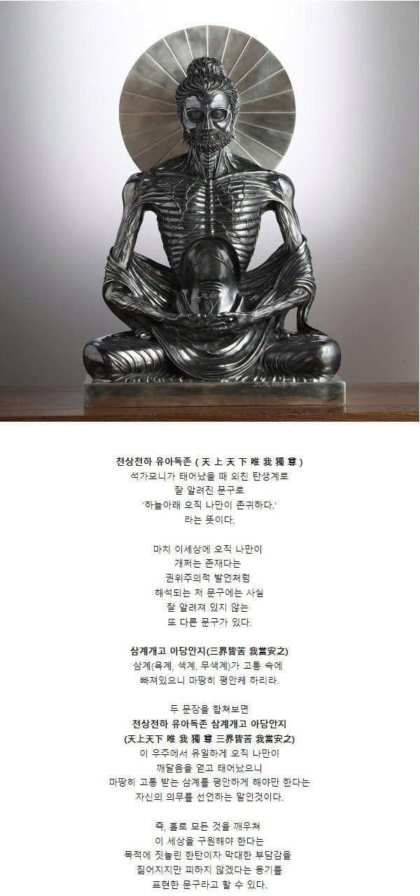

나는 이 세상에 홀로 선 선택받은 존재다 (X)
내가 이 세상에 홀로 선 선택받은 존재라니
책임감이 너무 막중하다...
그래도 이 세상을 구제하기 위해 최선을 다하겠다... (O)

오케이 출격을 허락한다 신지
까짓거
메시아 증후군에 영웅놀이를 즐기는 녀석
어디서 구라를 까노
응애하고 울었으면서ㅋㅋㅋ
ㅋㅋㅋㄹㅇ 어떻게 한문을 암 인도인이
한문을 사실... 인도인이 만들었거든요ㅋㅋ
'힘드노'
엥 에스카르노 대사인디
나는 우리고 우리는 나 이기 때문
You are 독종
예전에 석가모니가 했던 말 적어놓은거 봤는데 기원전 당시 시대상에서 나올 수 없는 깨달음이더라 존나 놀랐음
강 범람한다고 사람 목 썰어서 던지던 시절에 ㄹㅇ ㅋㅋㅋㅋ
그...어떤 고릴라가 이상한 거 전파하는 거보다 이게 더 울림이 있네
후... 고독하구만... 그래도 할 건 해야지
종교는 인민의 아편이다
설정집놀이에 너무 심취할필요 없음
말년에 본인이 신이라고 떠든게 묘법연화경인데
정작 본인의 죽음은 식중독걸려서 사망임
전형적인 사이비가 시간이 흘러 신격화되고 종교가 되는 과정임
안상홍도 그랬고 박태선도 그랬고 이재록도 그랬고 강일순도 그랬음
아쉽게도 문선명은 그러지 못하고 있는듯?
불교를 믿으려면 대승불교가 아니라 상좌부불교가 맞음
대승불교는 철학이 아닌 그냥 믿음으로 열반한다는 뻔한 레퍼토리임
육식 금하는것도 자칭 신이라 자처한 석가족의 신 싯다르타가 돼지고기 먹고 식중독걸려서 사망해서 그럼
ㅋㅋㅋ 불교도 알고보면 ㅈㄴ 짜치는듯
철학이니 뭐니 포장하지만 그 이면은 전형적인 사이비 종교
나를 신으로 추앙해라 나는 신이다!
묘법연화경은 붓다 사후에 제작된건데?
붓다가 먹은게 돼지고기인지 버섯인지 논쟁중인 부분인데 뭔 육식 금지?
종교는 아편 어쩌구를 잘못이해하고 있는건 너임. 그 당시에 아편은 마약성 물질로 쓰인게 아니라 진통제로 쓰였던 것임.
사회주의자들은 종교를 좆도 쓸모없는 적폐로 본게 아니라 초기 자본주의와 봉건주의의 고통을 잊게 해주는 진통제 정도라고 생각했음. 그리고 그 고통의 치료제가 사회주의가 될것이라 생각한 것임.
볼셰비키 새끼들이 전부 쳐죽이는 방식을 선택해서 이상하게 해석된게 주류인양 돌아다니는데 전혀 아니다 그거야.
종교가 허황된 설정집이란건 동의하지만....
육식을 금한건 싯다르타 죽고 1000년후
중국 남북조시대에 생긴 풍습이며
똑같이 싯다르타의 가르침을 계승하는
상좌부 불교에서는 육식을 금하지도 않는데
"육식 금하는것도 자칭 신이라 자처한
석가족의 신 싯다르타가 돼지고기 먹고
식중독걸려서 사망해서" 라 하는건 매우 억지스러움
그냥 살생을 줄이고자 하는 마음에
후대에 추가한 교리지 뭘...
예수가 제자들에게 결혼을 하지 말라
한적 없지만
예수 사후 1천년후 예수를 따르는
기독교 여러 종파 카톨릭 동방정교 콥트교 개신교.... 중
카톨릭에서 결혼을 금지한 것을 두고
"기독교 사제가 결혼 못하는 것도 예수가 결혼 못하고 죽어서 그런거임" 이라고 하는 것 만큼이나 억지임
결혼해서 자식을 두지 않으면 사제들의 부정축재 를 줄일거라 생각해서 시행한건데
교양 좀 쌓아라 요즘 이런 댓글 왤케 보이냐
ㄹㅇ..
뭔가 뒤죽박죽 알고있네
얕은 지식, 비대해진 신념
보통 이런걸 개 좆빠는 소리라고 해요
취임연설이었네ㅋㅋㅋㅋㅋ
아 이런게 진짜 진실을 호도하는
말도 안되는 사이비식 해석이다.
불교공부 제대로 하는 사람중에 이렇게 해석하는 사람은
없다고 해도 무방하다.
어? 이거 완전 워해머의 황제...
그양반 벌써 2만년째 즉신불 수행중이던데 일어서면 속에서 뭐가 튀어 나올지 몰라서 밑에 애들이 말리지도 못하고 끙끙대고 있더라.
씨바꺼 그래도 해야제
존나 히어로다운 발언이다.
천상천하 you are dog john
이열 태어나자마자 에고가 대단한 걸?
인도인이 태어나자마자 한자로 그런걸 외쳤다고?
불경은 고대부터 이미 한자로 번역되어 주변국에 전파되기 시작했음. 당연히 번역되어 알려진거지
바보냐 한글로 적혀있고 괄호에 한문 써있잖아
한국어로 외치고 한자쓰는 놈들 보라고 한자 적어논거임
애초에 본문도 잘못된 해석임.
나는 깨달음을 얻고 태어났다: X
나는 최고의 깨달음을 이룰 존재이며, 고통받는 삼계의 중생을 구제하겠다: O
already가 아니라 will임.
독공부터 마스터하고 태어남
소림무공도 익히면 다 쓸고 다닐듯
그러니까 붓다는 고죠 사토루가 아니라 타노스였다는거죠?
내가 제일 개쩌는 존재다 (×)
혼자서 해야함에 막중함을 느낀다(ㅇ)
오직 나만이, 이 세계의 결말을 알고 있다
마, 함 해보입시더
"그래도 해야지"
이게 불교의 핵심인거 같긴함.
기독교 : 날 위해 행하라
불교 : 스스로를 위해 선행하라
참 교리 수준차이가 너무 큼
선택받은 자 라는 사실은 달라지지 않잖아..?